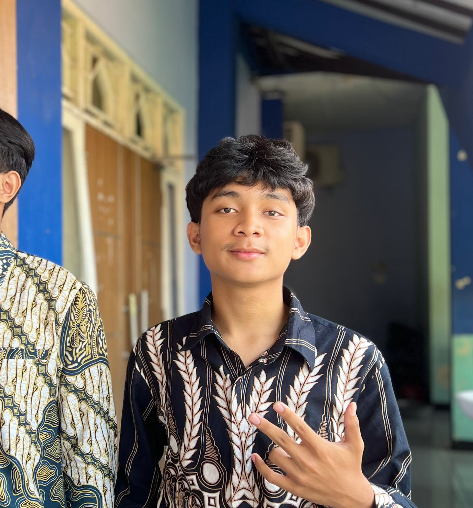
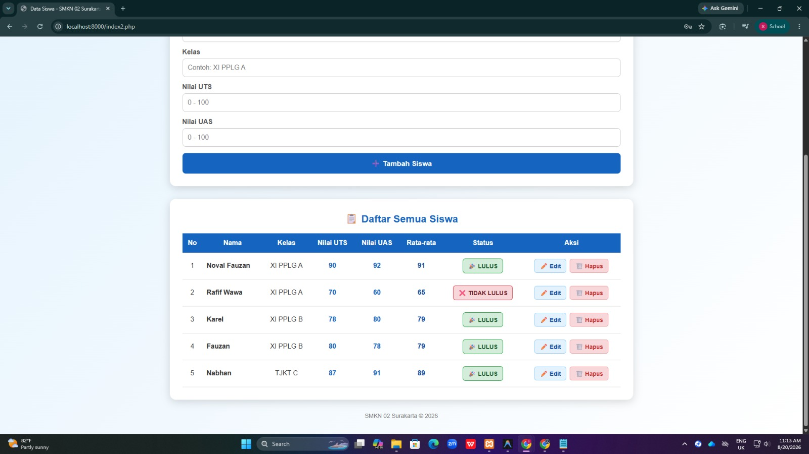
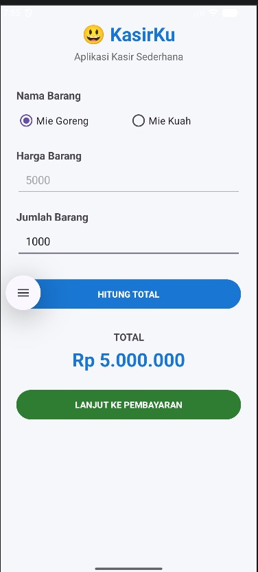

Struktur dasar halaman website

Noval Fauzan
Kelas: XI PPLG A
Sekolah: SMK Negeri 2 Surakarta
Tentang Saya
Hai! Perkenalkan, saya Noval Fauzan, siswa kelas XI PPLG A di SMK Negeri 2 Surakarta. Sehari-hari saya menghabiskan waktu untuk belajar di dunia teknologi, mulai dari dasar-dasar pemrograman sampai bikin aplikasi dan website sederhana. Buat saya, coding itu seru karena bisa mengubah ide jadi sesuatu yang bisa dipakai orang lain.
Di jurusan PPLG, saya semakin yakin bahwa pengembangan website dan aplikasi adalah bidang yang ingin saya tekuni lebih serius. Saya senang bereksperimen dengan HTML, CSS, dan JavaScript, lalu mencoba menerapkannya lewat proyek-proyek kecil. Website portofolio ini sendiri saya buat sebagai langkah awal untuk menunjukkan perkembangan belajar saya selama di sekolah.
Skills
Tampilan dan desain antarmuka
Interaksi dan logika di website
Pemrograman sisi server
Pengelolaan database
Pembuatan aplikasi Android
Version control dan kolaborasi kode
Projects

Website Sistem Data Siswa
Website untuk menampilkan dan mengelola data siswa sekolah. Website menggunakan database untuk menyimpan data siswa dan memiliki fitur pengelolaan data serta halaman login untuk keamanan.
- HTML
- CSS
- PHP
- MySQL
- phpMyAdmin

Aplikasi KasirKu
Aplikasi Android sederhana yang dibuat untuk latihan pemrograman Android. Aplikasi menggunakan input data dan pilihan RadioButton serta tombol untuk menampilkan hasil.
- Android Studio
- Java
- XML
Education
SMK Negeri 2 Surakarta
Jurusan: Pengembangan Perangkat Lunak dan Gim (PPLG)
SMP Budi Utomo Surakarta
Status: Lulus